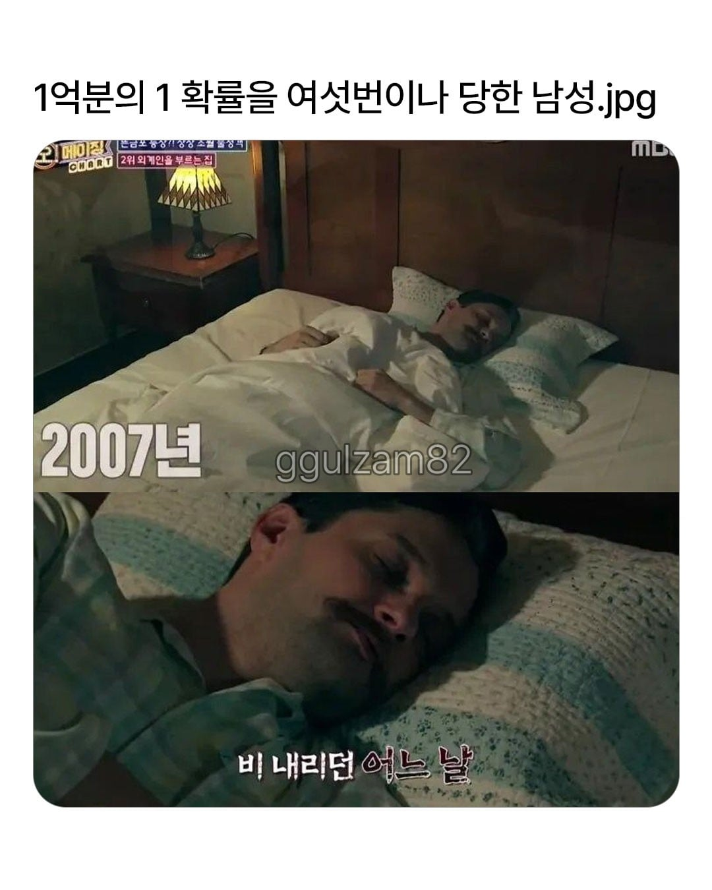
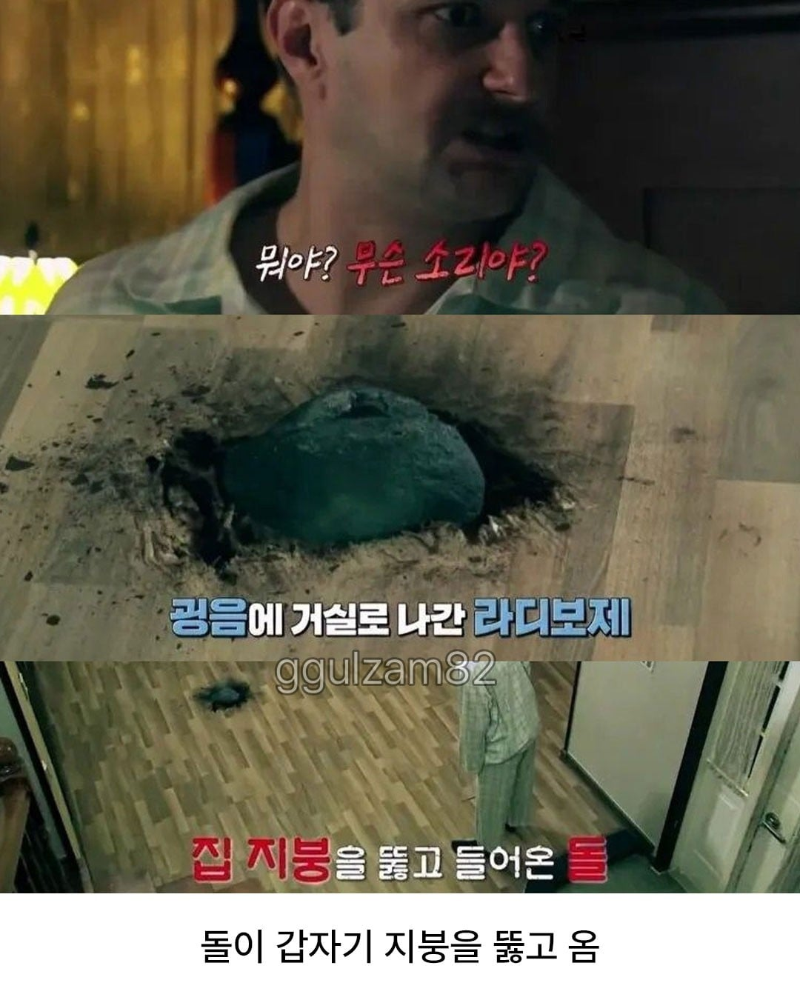
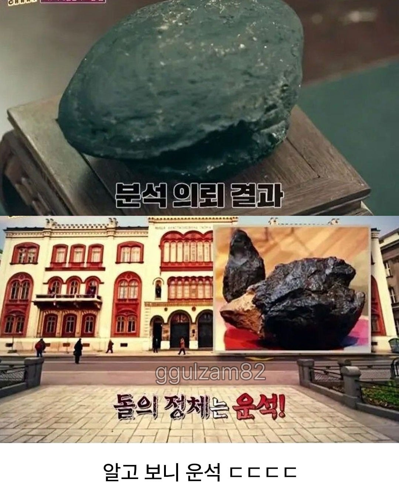
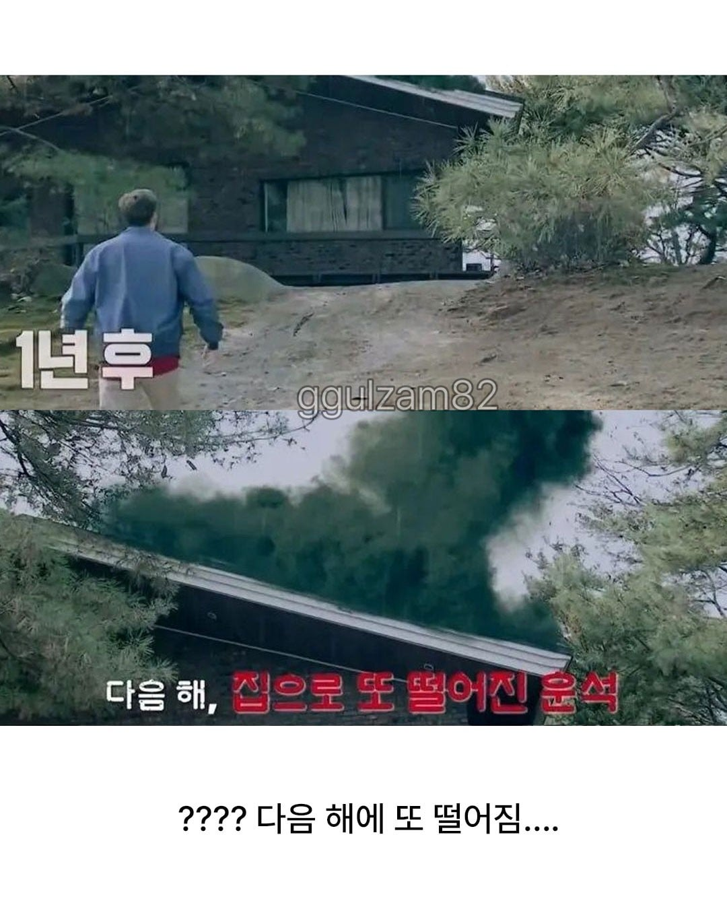
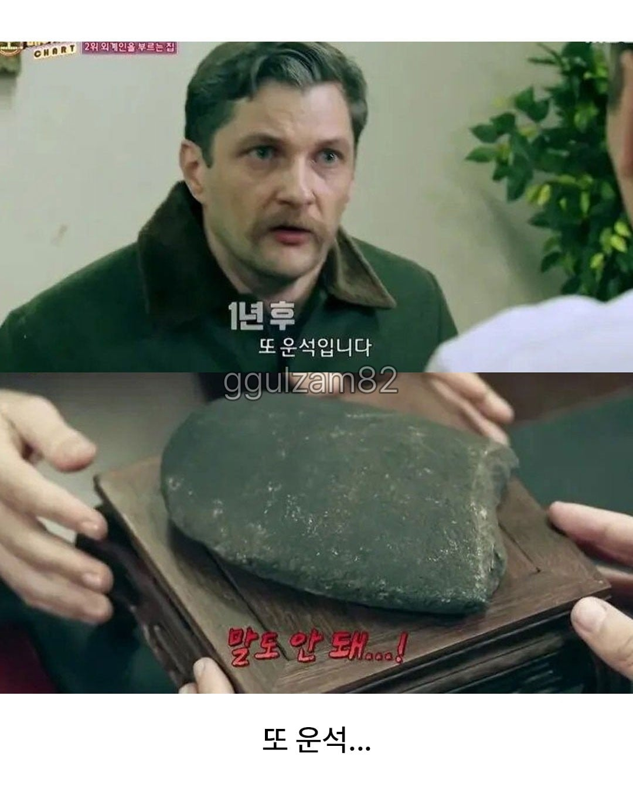
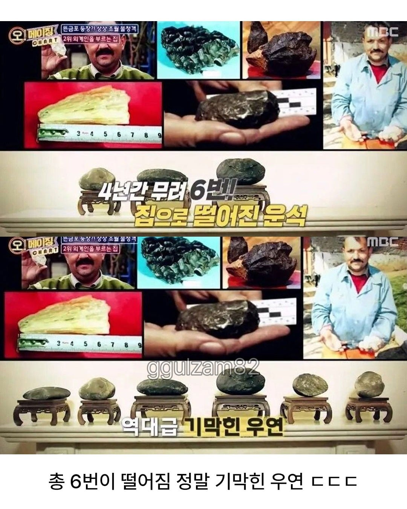
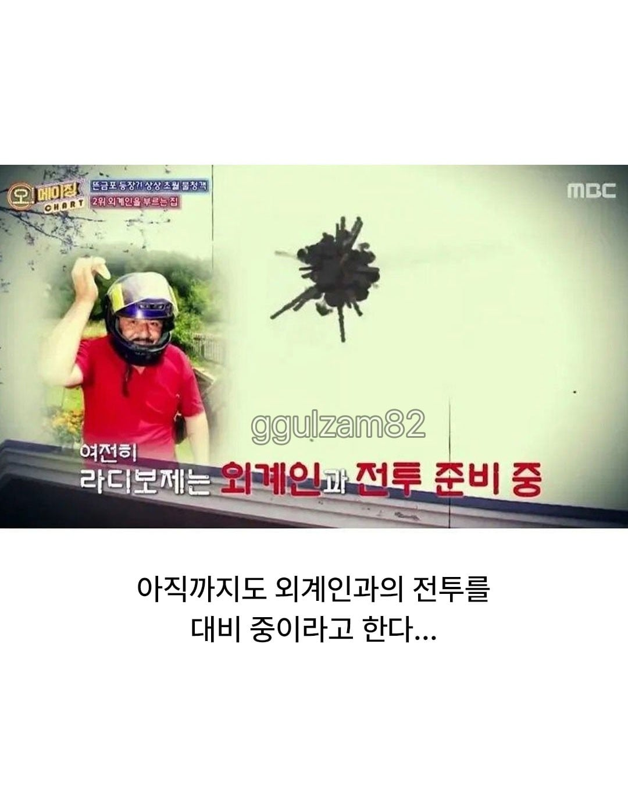

희귀하거나 없는 물질이면
값어치가 올라가는데
탄소인가? 하면 제값 못받는다 들은거 같음
미래의 내가 주는 선물
철 성분이 많은 운석이거나 희귀한 성분이 많아야 비싼 거고
그냥 일반적인 소행성 부스러기들이면 안 비쌈
저 운석들 팔면 수백억 벌 거 같은데..
솔직히 누가봐도 노리는거 맞음
저정도면 인정한다 ㅋㅋ
죠죠6부 플래닛웨이브스 아니냐?
저정도면 전투 준비 해야지 ㅋㅋㅋㅋ
???: 하 시발 존나 안맞네
스님과 목사님
형님 실례지만 연세가?
뭔 형님이야 너도 알아봤으니 동년배지
안그래 친구?
ㅋㅋㅋㅋㅋㅋㅋㅋㅋㅋㅋㅋ나이가???
, ㅇㅈ
그러자 목사님이 소리쳤다
스님!! 그런 말씀 하시면 천벌받는다니까요!!
그때 하늘에서 번개가 떨어져 목사님이 죽었다.
그러자 하늘에서 들리는 말.
시 발 존나 안맞네
외계인이 노리는건 모르겠지만 저렇게 자주 떨어지면 헬멧정도는 나도 쓸거같다 ㅋㅋㅋㅋ
외계인 이새기 에임 수준ㅋㅋ
이사 안가고 뭐하냐 ㅋㅋㅋ 저거 맞으면 죽을거 같은데
이사간 집에서 운석맞고 죽어야 완성
외계인 꼬맹이가 부모님 몰래 베란다 밖으로 화초 돌맹이 던졌는데 못맞췄네
저건 아무리 정신 멀쩡한 사람도 세번째부터는 의심 안 할 수가 없을듯 ㅋㅋㅋㅋ
이건 뭐라 할 수가 없네 ㅋㅋㅋ
푸른거탑 운석에피소드 생각난다
몇백년후에 헤밍웨이 마냥 평생 정신병에 시달렸던 사람.txt로 커뮤에 돌아다니겠네
?? : 이 씨발 존나게 안맞네
6번이면 사람이 피해망상에 안걸릴 수가 없음 ㅋㅋㅋ
GPT한테 물어보니 그런 썰은 있는데,
저 돌 6개가 운석인지 아닌지는 과학적으로 검증이 안됐대
'독립적인 전문가 검증이 확인되지 않는다며, 조작된 이야기일 가능성' 이래
??? : 야 ㅋㅋㅋㅋ 저새끼 지붕에 뭐 바른다 ㅋㅋㅋ
??? : 그래? 그럼 그만보내 ㅋㅋ
애초에 운석이란건 입증된거임?
에임 고자쉑
이사를 가 ㅈ쫌 ㅋㅋㅋ
이건 ㅅㅂ 정상인도 음모론자됨 ㅋㅋㅋㅋㅋㅋㅋ
저 정도면 의심할 수 밖에 없자나 ㅋㅋㅋㅋㅋ
6번이면 무섭지
저럴만하다
6번이면 노리는게 맞잖아
저거 운석팔면 ㅈㄴ 비싼거 아냐?